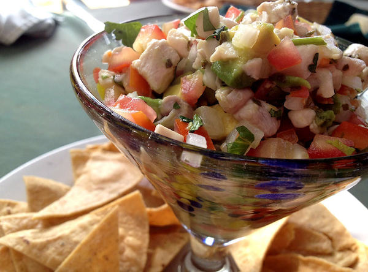

Ceviche
Description
Taking advantage of the coastline, Baja California Sur shows off its richness in fish and seafood with ceviche, the most popular dish in the state which is made with shrimp and fish.
Ingredients
- 1 pound fresh, skinless snapper, bass, halibut, or other ocean fish fillets, cut into 1/2-inch dice
- 1 1/2 cups fresh lime juice
- 1 medium white onion, chopped into 1/2-inch pieces
- 2 medium-large tomatoes (about 1 pound), chopped into 1/2-inch pieces
- Fresh hot green chiles (2 to 3 serranos or 1 to 2 jalapeños), stemmed, seeded, and finely chopped
- 1/3 cup chopped cilantro, plus a few leaves for garnish
- 1/3 cup chopped pitted green olives (manzanillos for a typical Mexican flavor)
- 1-2 tablespoons extra-virgin olive oil (optional)
- Kosher salt
- 3 tablespoons fresh orange juice or 1/2 teaspoon sugar
- 1 large or 2 small ripe avocados, peeled, pitted, and diced
- Tostadas, tortilla chips, or saltine crackers, for serving
Steps
- The fish may be marinated a day in advance; after about 4 hours, when the fish is "cooked," drain it so that it won't become too tangy. For the freshest taste, add the veggies and flavorings to the fish no more than a couple of hours before serving.
- Gather the ingredients.
- In a 1 1/2-quart glass or stainless steel bowl, combine the fish, lime juice, and onion. Use enough juice to cover the fish and allow it to float freely; too little juice means unevenly "cooked" fish. Cover and refrigerate for about 4 hours, until a cube of fish no longer looks raw when broken open. Drain in a colander.
- In a large bowl, mix together the tomatoes, green chiles, cilantro, olives, and optional olive oil. Stir in the fish and season with salt, usually about 1/2 teaspoon. Add the orange juice or sugar. Cover and refrigerate if not serving immediately.
- Just before serving, gently stir in the diced avocado.